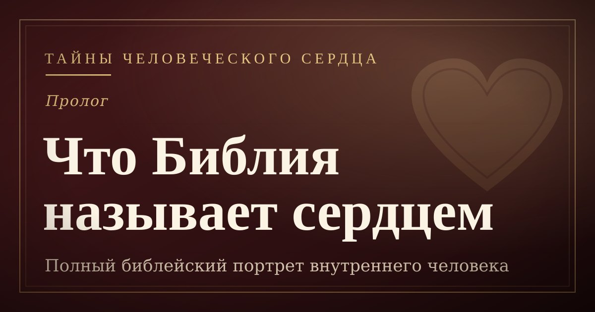
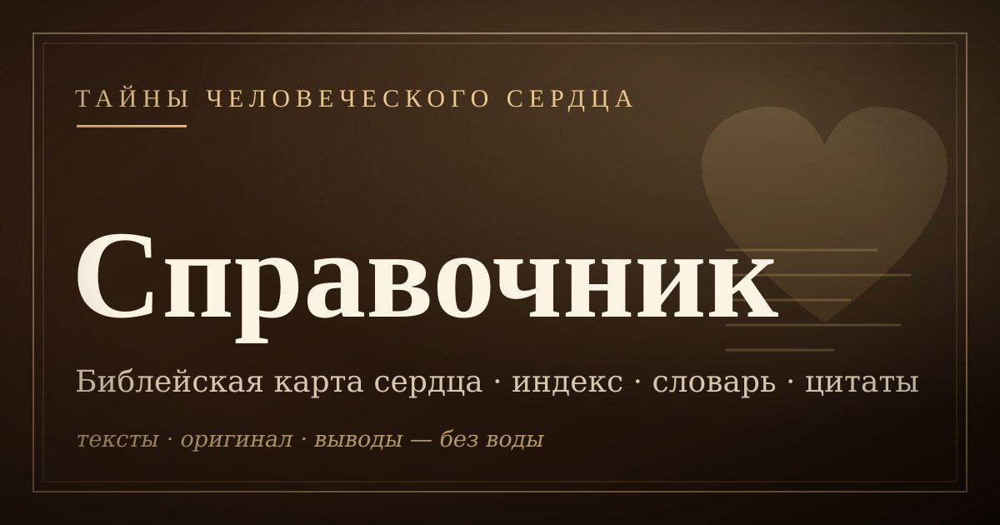

Пролог
Библейская кардиология: что Библия называет сердцем
Мы слышим «сердце» как чувства — но Библия говорит иначе. Полный библейский портрет: центр мысли, воли, доверия, любви, совести и поклонения — фундамент всей серии.
Авторская серия
Серия — последовательная экзегеза ключевых текстов о состоянии человеческого сердца: Иеремия 17, Римлянам 7 и Римлянам 8.
Главные вопросы: остаётся ли сердце верующего «крайне испорченным», кто говорит в Римлянам 7, и как Дух освобождает от закона греха и смерти.
Подход — историко-грамматический: контекст, оригинальные языки, богословский синтез и пастырское применение.
Цель — помочь верующему трезво смотреть на свою греховность, не теряя радости евангельской свободы и уверенности во Христе.
Цикл экзегетических разборов о природе падшего и возрождённого сердца. Иеремия 17:9–10, Римлянам 7 и Римлянам 8 — три ключевых текста, через которые Писание раскрывает тайну внутреннего человека.
Материалы серии

Мы слышим «сердце» как чувства — но Библия говорит иначе. Полный библейский портрет: центр мысли, воли, доверия, любви, совести и поклонения — фундамент всей серии.
Разбор Иеремии 17:9–10: что значит «сердце обманчиво более всего» — и относится ли это к верующему? Экзегеза, богословский синтез и пастырское применение.
Кто такой человек из Римлянам 7:14–25? Разбор ключевых экзегетических подходов и почему конфликт «внутреннего человека» и «плоти» так важен для понимания освящения.
Между испорченным сердцем и борьбой с грехом — решающее звено: Бог даёт новое сердце. Не ремонт старого, а новое рождение: «возьму сердце каменное и дам сердце плотяное» (Иез. 36:26).
Новое сердце даёт Дух — и Он же в нём поселяется. Римлянам 8: нет осуждения, помышления Духа, Дух усыновления и Дух, помогающий в немощи. И как отличить жизнь по Духу от погони за переживаниями.

Не пересказ статей, а инструмент: полный библейский индекс, словарь оригинала, сверенные цитаты, диагностические сетки и выводы без воды — настольный компаньон серии.
части (план)
опубликовано
минуты чтения
основные тексты